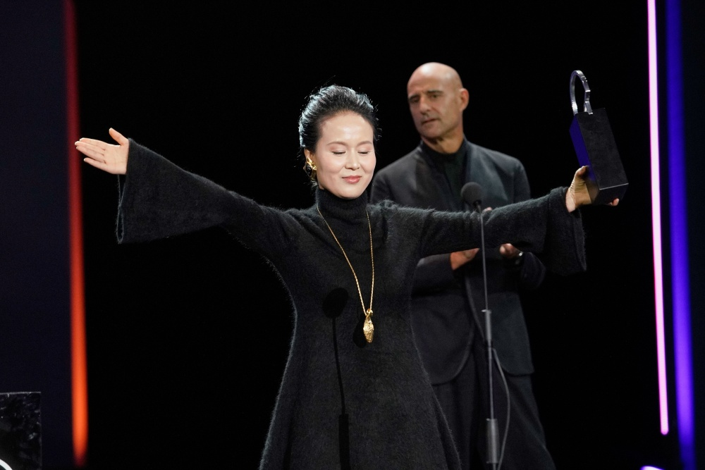

Premios de interpretación: Concha de Plata (ex aequo)
📅 Publicado: 27 de septiembre de 2025
El jurado otorgó la Concha de Plata a la mejor interpretación protagonista ex aequo a José Ramón Soroiz por Maspalomas y a Zhao Xiaohong por Her Heart Beats in Its Cage.
Este reconocimiento destaca la excelencia actoral y la capacidad de los intérpretes para transmitir emociones profundas dentro del panorama cinematográfico internacional.
La decisión del jurado refuerza el compromiso del festival con el cine de calidad y la diversidad cultural, premiando dos trabajos que, aunque distintos en estilo, comparten una humanidad desbordante.
Importancia del premio
La Concha de Plata sitúa a los intérpretes premiados como referentes de profesionalismo y talento en el cine contemporáneo, abriéndoles las puertas a nuevos mercados internacionales.


Un momento histórico en el Kursaal
La ceremonia de entrega, celebrada en el emblemático Auditorio Kursaal, dejó momentos de gran emoción. El actor vasco José Ramón Soroiz, visiblemente conmovido, dedicó el premio a "todos aquellos que mantienen viva la cultura en los momentos difíciles". Su interpretación en Maspalomas ha sido calificada por la crítica como un "ejercicio de contención y vulnerabilidad sin precedentes".
Por su parte, la actriz Zhao Xiaohong, quien no pudo ocultar su sorpresa al ser nombrada, agradeció al festival por ser un puente entre Oriente y Occidente. Su papel en Her Heart Beats in Its Cage ha cautivado por la fuerza física y la expresividad silenciosa que otorga a su personaje, consolidándola como una de las actrices más prometedoras del cine asiático actual.
El criterio del Jurado Internacional
El jurado ha explicado que otorgar el premio de forma compartida (ex aequo) no fue una falta de decisión, sino una voluntad clara de reconocer dos formas magistrales y opuestas de entender la actuación. "Ambos actores han logrado lo más difícil en el cine: que nos olvidemos de que están actuando para creer plenamente en sus verdades", rezaba el acta oficial.
Este doble galardón cierra una de las ediciones más competitivas de los últimos años en la sección oficial, donde la calidad de las interpretaciones ha sido, según palabras de la dirección del festival, el motor principal de la 73ª edición. Los premiados ahora inician una gira de promoción que los llevará por los principales festivales de otoño en Europa y América.